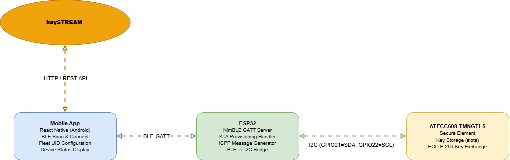
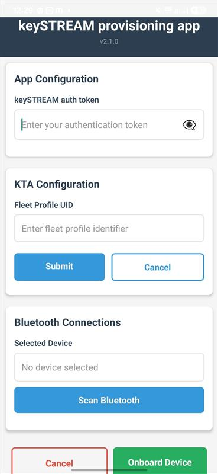
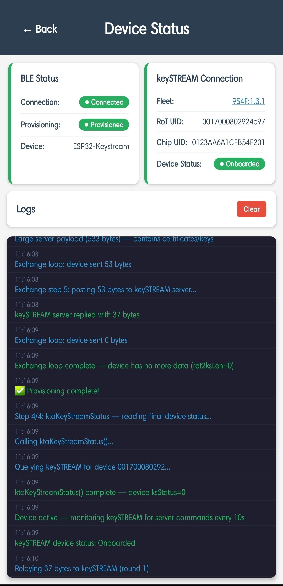

ESP32 BLE Mobile App — keySTREAM Provisioning Guide
End-to-end guide for onboarding an ESP32 + ATECC608 device onto the keySTREAM platform using a React Native mobile app over Bluetooth Low Energy (BLE).

Overview
| Item | Details |
|---|---|
| Example | ESP32_Mobile_APP_X |
| Board | ESP32 development board + ATECC608 secure element |
| Transport | Bluetooth Low Energy (BLE) — mobile app ↔ ESP32 |
| Cloud | keySTREAM portal (HTTP) |
| Build tool | ESP-IDF v5.3.1 (idf.py) |
What this solution does
The mobile app acts as a transparent relay between the ESP32 + ATECC608 device and the keySTREAM cloud server. All KTA (keySTREAM Trust Agent) cryptographic protocol logic runs on the ESP32 firmware and ATECC608 hardware. The app simply forwards binary provisioning messages back and forth and displays the result.
End-to-end flow
- User enters Auth Token and Fleet Profile UID in the mobile app.
- App scans for nearby BLE devices and connects to the ESP32.
- App triggers provisioning; ESP32 runs the KTA exchange loop with the keySTREAM server.
- On success, the app shows the device status, chip UID, and connection details.
Prerequisites
Hardware
| Item | Purpose |
|---|---|
| ESP32 development board | Main microcontroller target |
| ATECC608 secure element (breakout or module) | Cryptographic key storage (I2C) |
| USB Micro-B cable (data-capable, not charge-only) | Power and flashing |
| Android phone with Bluetooth (BLE) | Host for the mobile app |
- Note
- Service Availability Notice: The Signing Key Service and Symmetric Key Service are currently under active development for the ESP32 MCU platform. Full support for these cryptographic services will be introduced in a forthcoming release.
keySTREAM Portal Setup
Complete these steps before building or running anything:
| Step | Action | Guide |
|---|---|---|
| 1 | Create a keySTREAM account | mc.obp.iot.kudelski.com |
| 2 | Create a Fleet Profile and copy its Fleet Profile Public UID | Fleet Profile Creation Guide |
| 3 | Obtain an Auth Token (Bearer token) from the portal | Portal → API Keys or session token |
| 4 | Claim your device using its Chip UID or RoT Public UID | Portal → Fleet & PKI → Devices |
The Fleet Profile UID and Auth Token are entered directly in the mobile app — they are not embedded in the firmware.
Software — Firmware Build (host PC)
| Tool | Version | Notes |
|---|---|---|
| Windows 10/11 | — | Linux/macOS also supported by ESP-IDF |
| ESP-IDF | v5.3.1 | Installed via the Espressif Windows installer |
| Python | 3.12 | Bundled inside the ESP-IDF installer |
| CMake | 3.24+ | Bundled inside the ESP-IDF installer |
| USB-to-Serial driver | — | CP210x or CH340 depending on your board |
Software — Mobile App Build (host PC)
| Tool | Purpose |
|---|---|
| Node.js LTS (≥ 18) and npm | Install JS dependencies and run the React Native CLI |
Android Studio / Android SDK with adb | Build the APK and install it on the phone |
| JDK 17 | Required by the Android Gradle build |
Hardware Wiring — ESP32 to ATECC608
| ESP32 Pin | ATECC608 Pin | Description |
|---|---|---|
| GND | GND | Ground |
| 3V3 | 3V3 | Power (3.3 V) |
| GPIO 21 | SDA | I2C Data |
| GPIO 22 | SCL | I2C Clock |

Package Setup
Before building, clone the repository:
Then configure the firmware package using the provided script:
- Navigate to
keySTREAM_provisioning\PreIntegrated-Examplesin the package - Open PowerShell and run
.\Config.ps1 - Select TrustMANAGER when prompted
- Select your device — ESP32_Mobile_APP_X
- The script generates the configured firmware package; place the generated
ESP32_Mobile_APP_Xfolder in your preferred path (e.g.C:\) and proceed to build and flash
If you encounter any error while running
Config.ps1, refer to the Config.ps1 — Troubleshooting & Usage guide.

Quick Start
Fastest path from zero to a provisioned device:
Firmware Build Instructions
Project structure
KTA sources are vendored under
main/kta_provisioning/. The only ESP-IDF component undercomponents/iscryptoauthlib.
Step 1 — Install ESP-IDF
Option A — Windows Installer (recommended)
- Download the Espressif Windows Installer from:
https://dl.espressif.com/dl/esp-idf/ - Run
esp-idf-tools-setup-online-*.exe. - Select ESP-IDF v5.3.1 when prompted.
- The installer places everything under
C:\Espressif\and creates a **"ESP-IDF v5.3 PowerShell"** Start Menu shortcut.
Option B — Manual (git clone)
Step 2 — Activate the ESP-IDF environment
Run this once per terminal session before any idf.py command:
Expected output (last line):
Tip: Using the "ESP-IDF v5.3 PowerShell" Start Menu shortcut activates the environment automatically.
Step 3 — Configure the firmware (optional)
The Fleet Profile UID is set at runtime by the mobile app, not compiled into the firmware. No firmware edits are required for standard provisioning.
If you need to change device-level settings (I2C pins, BLE device name), edit:
Step 4 — Build
Successful build output:
The compiled binary is at:
Full clean and rebuild
fullcleanremoves all build artifacts includingmanaged_components. The next build will re-download IDF component manager dependencies.
Flashing Instructions
- Connect the ESP32 board via USB.
- Find the COM port in Device Manager (e.g.
COM9).
Press Ctrl+] to exit the serial monitor.
If flashing fails or the port is not detected, hold the BOOT button on the ESP32 while initiating the flash command, then release it once flashing begins.
Mobile Application Setup
Project structure
Step 1 — Install dependencies
Step 2a — Run a debug build on a connected phone (fastest for testing)
``powershell @section autotoc_md374 With an Android phone connected via USB (USB debugging ON) and visible inadb devices` npm run android
The release APK is created at:
Step 3 — Install the APK on the phone
Option A — ADB (fastest):
Option B — Manual transfer:
- On the phone: Settings → Apps → Special app access → Install unknown apps → enable for your file manager.
- Copy the APK to the phone via USB or cloud storage and tap to install.
BLE Pairing and Discovery
The ESP32 firmware advertises a BLE GATT server using the Nordic UART Service (NUS). The mobile app uses react-native-ble-plx to scan and connect.
| BLE parameter | Value |
|---|---|
| Advertised device name | esp32_KTA |
| BLE MTU size | 244 bytes |
| Profile | Nordic UART Service (NUS) |
Scanning steps in the app:
- Enable Bluetooth on the Android phone.
- Grant the app Bluetooth and Location permissions when prompted.
- Tap Scan for Bluetooth Devices in the app.
- Select your
esp32_KTAdevice from the list.
If the device does not appear in the scan list, verify that the firmware is running (serial monitor should show
BLE advertising started) and that the phone is within 5 metres of the ESP32.
Device Provisioning Flow
Using the app
- Open the app and tap keySTREAM Provisioning from the home screen or app drawer.
Enter credentials:

Mobile App Home Screen
| Field | Value |
|---|---|
| Auth Token | Bearer token from the keySTREAM portal |
| Fleet Profile UID | e.g. 9S4F:example.org:dp:my-fleet |
- Tap Submit — the app connects to the keySTREAM portal and validates your fleet.
- Tap Scan for Bluetooth Devices, wait for scanning to complete, and select your ESP32 board.
- Tap Start Provisioning — the app connects to the ESP32 over BLE and starts the KTA provisioning exchange automatically.
- Wait for provisioning to complete (typically 30–60 seconds). The app relays messages between the ESP32 and the keySTREAM server in multiple rounds.
On success, the Device Status screen displays:

Mobile App Status Screen
| Field | Description |
|---|---|
| Status | Provisioned, Activated, or CON_REQ |
| Chip UID | Hardware identity of the ATECC608 |
| Connection details | Server endpoint and round count |
- From the Device Status screen you can also:
- Refurbish — reset the device to factory state (deletes all credentials)
- Renew — refresh the certificate chain
What happens internally
The app is a relay. All KTA protocol logic runs on the ESP32 firmware:
| Phase | KTA API | Description |
|---|---|---|
| Initialization | 0xA0 | Clears ATECC608 lifecycle state |
| Startup | 0xA1 | Initialises KTA with L1 seed, profile UID, serial, version |
| Set device info | 0xA2 | Associates device with the Fleet Profile on the server |
| Exchange loop | 0xA3 (×1–10) | ICPP round-trip: ATECC608 generates challenge/response; server sends certs/keys |
| Status query | 0xA4 | Reads final device state |
Cloud Connection Verification
After provisioning completes:
- In the app: The Device Status screen shows
Provisionedand a valid Chip UID. - In the keySTREAM portal:
- Navigate to Fleet & PKI → Devices.
- Find your device by its Chip UID.
- Status should show Provisioned or Activated.
- In the serial monitor (
idf.py -p COM9 monitor):- Look for log lines containing
ProvisionedorE_K_STATUS_OK. - No error messages should appear after the final exchange round.
- Look for log lines containing
Expected serial monitor output
Troubleshooting
BLE / Mobile App
| Symptom | Solution |
|---|---|
| BLE scan finds no device | Confirm the firmware is flashed and running. Check serial monitor for BLE advertising started. Ensure phone is within 5 m of the ESP32. |
| BLE disconnects during provisioning | The app reconnects automatically and resumes from the last completed round. Wait up to 60 seconds. |
| App crashes on startup | Uninstall and reinstall the APK. Grant all requested permissions (Bluetooth, Location). |
| Device does not appear after scanning | Check that the device name in project_config.h matches esp32_KTA. Power-cycle the ESP32. |
Provisioning Failures
| Symptom | Solution |
|---|---|
HTTP 401 from cloud | Auth Token is wrong or expired — update it in the app. |
HTTP 500 from cloud | Device is not claimed in the portal, or the payload is invalid. Claim the device first, then power-cycle the ESP32 and retry. |
| Device not claimed error | Go to the keySTREAM portal → Fleet & PKI → Devices and register the Chip UID. |
| Provisioning stuck at round 1 | I2C wiring issue between ESP32 and ATECC608. Verify SDA→GPIO21, SCL→GPIO22, power is 3.3 V. |
Status stays Activated (not Provisioned) | Normal — Activated is a valid intermediate state. Run another provisioning cycle or wait for the NOOP polling loop to complete. |
ESP-IDF Build Failures
| Error | Cause | Fix |
|---|---|---|
idf.py is not recognized | ESP-IDF environment not activated | Run C:\Espressif\frameworks\esp-idf-v5.3.1\export.ps1 first |
python.exe doesn't exist | Python venv was not created | Run: python.exe C:\Espressif\frameworks\esp-idf-v5.3.1\tools\idf_tools.py install-python-env |
ninja failed — multiple definition of salSignHash | Stub in main.c conflicts with k_sal_crypto.c | Remove the stub from main.c; keep only the #include "k_sal_crypto.h" line |
undefined reference to ble_sal_enqueue_rx | BLE SAL sources not listed in CMakeLists.txt | Ensure backend_ble.c and ble_sal.c entries are not commented out in main/CMakeLists.txt |
mingw32-make: No targets specified | mcu_bridge_build custom target runs without a Makefile | Update CMakeLists.txt to the latest version; the guard skips the target automatically |
Flashing Failures
| Symptom | Solution |
|---|---|
| COM port not found | Install the correct USB driver: CP210x → Silicon Labs driver; CH340 → CH340 driver |
| Flashing times out or fails | Hold BOOT button on ESP32 while running idf.py flash, release after flashing starts |
| Device crashes at boot / reset loop | Run idf.py -p COM9 erase_flash then idf.py -p COM9 flash to clear NVS and start clean |
| Wrong binary flashed | Verify you are in the correct firmware/ directory before running idf.py flash |
Frequently Asked Questions
Q: Do I need to recompile the firmware every time I provision a new device?
A: No. The Fleet Profile UID and Auth Token are entered in the mobile app at runtime. Flash the firmware once per physical board.
Q: Can I use iOS instead of Android?
A: The current app targets Android only. iOS is not supported in this release.
Q: The app shows "Device not claimed" — what does that mean?
A: The keySTREAM portal does not recognise the device's Chip UID. Go to Fleet & PKI → Devices in the portal and register the Chip UID before provisioning.
Q: How do I find the Chip UID before provisioning?
A: Open the serial monitor (idf.py -p COM9 monitor) after flashing. The firmware prints the ATECC608 Chip UID on startup.
Q: What is the difference between Activated and Provisioned?
A: Activated means the device has exchanged initial keys with the server. Provisioned means the full certificate chain has been installed and the device is ready for field operation.
Q: Can I refurbish and re-provision the same device?
A: Yes. From the Device Status screen tap Refurbish. The app resets the ATECC608 lifecycle state and runs a full provisioning cycle again.
Q: The build fails with a size_t undefined error in ktamgr.c.
A: This indicates the Config.ps1 KTA source patch over-matched and removed #include directives. Re-run Config.ps1 with the latest version to regenerate a clean SOURCE/ tree, then rebuild.